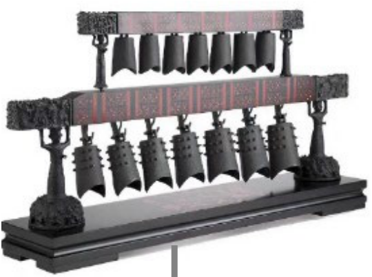
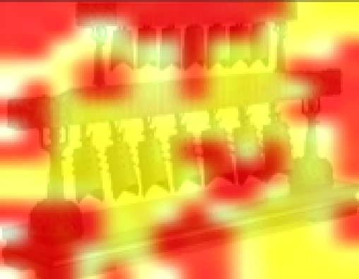
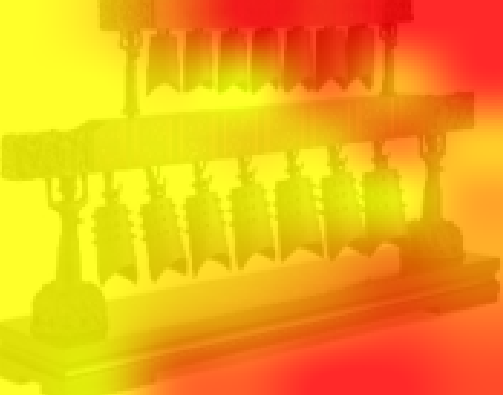
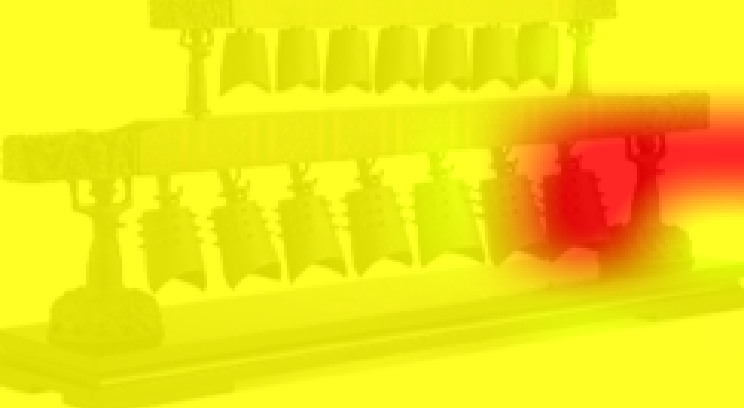

Co-policy: Responsive Human-Robot Co-Creation for Musical Performances
Art has long stood as a pivotal expression of human creativity, and music is a compact but demanding testbed for embodied artificial intelligence. Most generative AI systems create disembodied content: text, images, audio, or symbolic scores. A robot musician must do something harder. It must understand an incomplete human seed, contribute a complementary musical response, and realize that response through timed physical contact with an instrument.
Co-policy is a modular embodied AI agent for human-robot musical co-creation. It combines semantic intent grounding, constrained musical variation, and a low-latency Gaussian-Mixture Visuomotor Policy (GMP), allowing a chime-striking robot to move beyond playback and participate in physically grounded musical interaction.


A modular embodied co-creation agent
The core challenge is to connect semantic musical understanding with real-time, physically executable action. Co-policy addresses this through three coupled modules: a semantic anchor bank for Qwen-VL, a constrained musical variation planner, and a single-pass mixture-density visuomotor policy for robot execution.

Two streams, one guided attention
Striking the right bell needs two kinds of evidence that pull against each other: the layout of the whole chime frame, and the texture of one bell edge where the mallet has to land. A single token sequence cannot serve both roles, because the long-range terms dominate and fine contact detail is averaged away. Co-policy therefore keeps a global and a local branch separate, and couples them asymmetrically through guided self-attention.
Select a stage to highlight the feature it produces. The maps below are the ones published in the paper, for the same observation.




Stage detail
A single egocentric RGB frame is the only visual input, and both encoder branches read that same frame. Nothing is discarded by a pre-selected crop or a hand-designed region of interest.
Unlike robotic playback systems that merely reproduce user-specified notes, Co-policy interprets an incomplete creative seed under musical and physical constraints. The semantic anchor bank provides style descriptors, technical annotations, score context, robot-playability tags, and structured target plans. The planner preserves the human motif while introducing harmonic, rhythmic, or accompaniment variation.
Pick the mood a player might say out loud. All four anchors are reproduced verbatim
from Real_robot/semantic_anchors.json, and the prompt is the one
create_music_prompt() builds in
Real_robot/music_creation.py. Highlighted lines are the ones the
anchor writes.
- style_descriptor
- joyful melody
- technical_annotation
- allegro moderato, 4/4 time
- tempo_range
- 120 – 140 BPM
- robot_playability_tags
You are a musical co-creator for a physical chime-playing robot. Generate a complementary response rather than copying the human seed. Return JSON with fields: intent, style, tempo, human_seed, robot_role, available_notes, and robot_notes. Style anchor: joyful melody - allegro moderato, 4/4 time Robot playability constraints: short motif, clear onset, reachable bells Current human seed notes: [Note60 | Note64 | Note67] User command: play something joyful with me
Anchors are guardrails rather than a lookup table: they fix style, annotation, and
playability, while the note sequence itself is still generated. Two details are easy
to miss. An unrecognised mood falls back to joyful instead of failing,
and tempo_range is kept for the planner but never reaches the prompt, so
the two highlighted lines are the only ones the anchor writes. The seed line shows
the paper's example motif C4 E4 G4 as MIDI numbers, which is how the prompt builder
formats notes; generated notes are afterwards snapped to the seven playable chime
notes, C4 through B4.
Why a Gaussian-Mixture Visuomotor Policy?
A single target note can be reached through multiple feasible motions, such as a top-down strike, side swing, or gentle tap. Deterministic behavior cloning tends to average these alternatives, while diffusion-policy execution can preserve multimodality at the cost of repeated denoising. GMP represents these alternatives as latent action modes and predicts mixture parameters in one forward pass.
Step through a single inference pass, switch the selection rule, or pick a mode to inspect it. Blobs and bars are clickable.
Schematic, in the same sense as the diagram it reproduces: the component layout and weights illustrate the mechanism and are not measured per-component values. The reported quantitative results are the accuracy and action-frequency figures below.
Evaluating Co-policy on real-robot musical co-creation
We evaluate Co-policy on real-robot chime performance and use ManiSkill2 as a secondary visuomotor generalization sanity check. The real-robot study focuses on whether the agent aligns with human intent, contributes new musical material, executes feasible actions, and responds at interactive speed.
Table values from the paper: Co-policy reaches 0.69 combined chime-striking accuracy and 18.6 Hz post-command action frequency. The frequency measures the visuomotor execution loop after a robot command is available; it is not a full speech-to-action latency claim.
Where do we go from here?
Co-policy points toward embodied AI systems that can participate in artistic practice rather than only generating disembodied media. The current system is still bounded by the semantic anchor bank, the available instrument, acoustic noise, and limited tactile or force feedback. Future work will extend the framework to richer acoustic source separation, contact feedback, additional instruments, multi-robot ensembles, and longer human-AI improvisation.
The implementation is available in the accompanying GitHub repository, including semantic anchors, the constrained music planner, the real-robot execution loop, and ManiSkill2-based evaluation infrastructure.